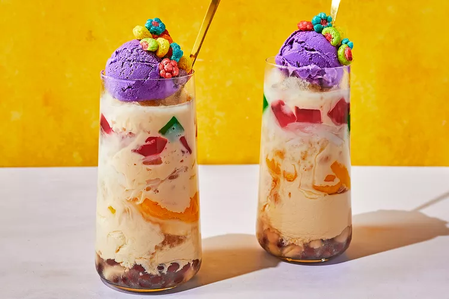
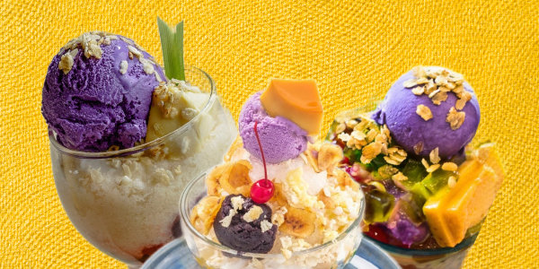

Halo-Halo (Filipino Shaved Ice Dessert)


Description
Halo-Halo is a popular Filipino dessert made with crushed ice, sweetened
fruits, jellies, beans, and leche flan,
topped with evaporated milk and sometimes ube ice cream. It's a colorful,
refreshing treat perfect for hot weather.
Ingredients
- 1 cup crushed or shaved ice
- ¼ cup milk fresh or evaporated
- 1 teaspoon sugar if needed
- 1 teaspoon sweetened saba or plantain bananas
- 1 teaspoon sweetened sweet potatoes
- 1 teaspoon sweetened red munggo
- 1 teaspoon sweetened garbanzos (chickpeas) or beans
- 1 teaspoon fresh of sweetened langka jack fruit
- 1 teaspoon coconut strips or sweetened macapuno
- 1 teaspoon nata de coco coconut gel
- 1 teaspoon sago or tapioca pearls or jelly cut into cubes
- 1 tablespoon leche flan topping
- 1 tablespoon ube jam or 1 scoop of ube ice cream topping
Steps
-
In a tall glass, add a teaspoon of each of your selected ingredients.
-
Add sugar if you like. Personally, I find that the other ingredients are
sweet enough so I do not any more sugar.
-
Fill the glass with shaved ice up to the brim. Push it down and add some
more.
- Drizzle with milk.
- Add the toppings of choice.
- Serve with a long spoon for mixing (‘halo’) and enjoy.
Home